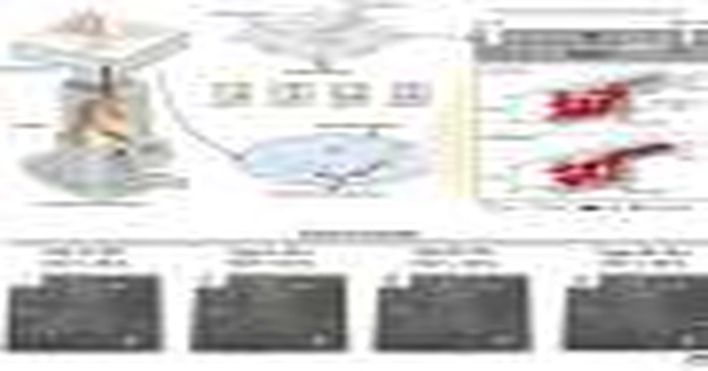

Ручное устройство сообщает о группе крови и уровне эритроцитов за 1 минуту
Когда кто-то тяжело ранен, врачам срочно нужны два факта: группа крови пациента, чтобы переливание было безопасным, и его гематокрит, доля крови, состоящей из эритроцитов, которая выявляет кровопотерю или анемию.
Больницы измеряют как большими машинами, которые нуждаются в электричестве, так и обученным персоналом, который часто недоступен в машинах скорой помощи, зонах бедствия или отдаленных клиниках.